Available for Data Science · AI/ML · Python · GIS · GeoAI
PYTHON · DATA SCIENCE · AI/ML · GEOAI · SPATIAL INTELLIGENCE
Turning complex data into operational intelligence.
I build end-to-end Python, data-science, machine-learning and GeoAI systems that connect data, imagery, APIs and decision-makers across infrastructure, utilities, disaster management, agriculture and enterprise applications.
PakistanGCC & global opportunitiesMSc GIS10+ years

01ObserveEarth observation
02PredictDecision intelligence
ABOUT
Geospatial depth.
AI-forward thinking.
MSc GIS professional and Python data/AI practitioner with 10+ years across enterprise GIS, remote sensing, spatial databases, infrastructure, utilities, agriculture and disaster-risk workflows.
I extend traditional GIS into Data Science, Data Engineering, ML/DL, RAG/LLM applications, APIs, GeoAI, remote-sensing automation, BIM–GIS integration and Digital Twins—with a practical focus on decisions, not technology for its own sake.
Python • Pandas • NumPy • scikit-learn • TensorFlow • LangChain/RAG • FastAPI • SQL/PostgreSQL • ArcGIS/QGIS • GEE • GeoAI
CORE EXPERTISE
One connected spatial stack.
Focused capabilities rather than a long technology catalogue.
⌖
Enterprise GIS
ArcGIS Enterprise, geodatabases, topology, governance, field workflows and operational dashboards.
Spatial systems that scale◉
Remote Sensing
Sentinel, Landsat, SAR, LiDAR, change detection, crop intelligence and Earth Engine.
Observe change objectively✦
Data Science & GeoAI
Predictive analytics, time-series models, ML/DL, RAG, LLM APIs and spatial intelligence.
Predict what matters next⬡
UAV & Survey
GNSS, RTK/PPK, GCPs, photogrammetry, orthomosaics, DEMs and 3D reconstruction.
Precision from the air▱
BIM & Digital Twin
CAD/BIM/IFC-to-GIS integration, asset context, MEP intelligence and spatial twins.
Connect design and reality↗
Data Engineering
ETL, SQL, APIs, FastAPI/Flask, Streamlit, Web GIS, dashboards and deployment workflows.
Move models into actionSELECTED WORK
Fewer projects. More signal.
Six flagship systems plus a curated set of professional case studies. Each item links to live work or source material.
PK
35 DISTRICTS · FLOOD INTELLIGENCE
FLAGSHIP · LIVE · GIS + GEOAI
Pakistan National Flood Intelligence System
Decision support combining weather outlooks, flood impacts, river observations, reservoir storage, rainfall, maps and GeoAI scenario planning.
- District-level risk and action profiles
- Hazard, exposure and infrastructure context
- River, reservoir and rainfall analytics
- Planning and recovery scenarios
SELECTED PROJECT / REACTOverview
Pakistan National Flood Intelligence
A national flood-planning dashboard combining dated disaster-impact context, river and reservoir summaries, district screening and phase-specific response views.

- District risk screening and present, 24-hour, 72-hour, stress-test and recovery scenarios documented in the repository.
- Mitigation, preparedness, response and rehabilitation planning views.
- Map themes, exposed-asset indicators and infrastructure-damage context.
ReactTypeScriptGeoJSONDisaster planning
Project overview graphic, not an app screenshot. Demo currently requires sign-in. Scenario indices are qualitative planning indicators; dated observations are not current readings.
SELECTED PROJECT / CSV ANALYTICSScreenshot
Prediction Studio
A browser-based CSV analytics workspace with transparent calculations for heart-model audits, hospital capacity, healthcare inventory and device-event trends.
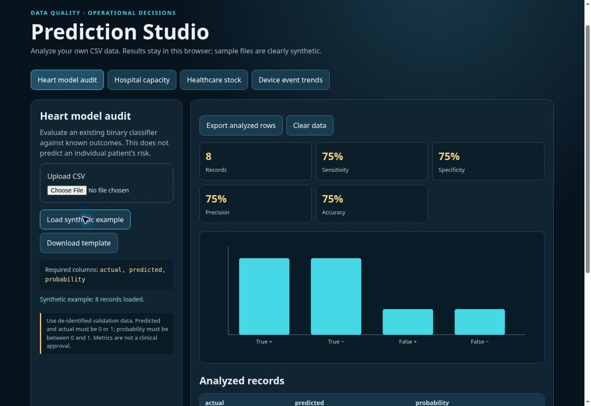
- Upload CSVs or load clearly labeled synthetic examples with row-level validation.
- Inspect sensitivity, specificity, precision and accuracy for existing labeled classifier outputs.
- Analyze capacity and stock-planning indicators, view hover-enabled charts and export analyzed records.
CSV analyticsModel evaluationClient-side JavaScript
Actual screenshot using eight synthetic records. The heart workflow audits an existing model; it does not diagnose patients or predict individual risk.
SELECTED PROJECT / ENGINEERING DRAWINGSOverview
MEP Drawing Analyzer
A portfolio entry for engineering-drawing analysis and structured MEP information, retained from the selected-project catalogue.

- Focus: interpreting mechanical, electrical and plumbing drawings.
- Focus: organizing drawing information for engineering review.
- Related accessible implementation: MEP Scanner System, with OCR, confidence QA and Excel reporting.
Engineering drawingsMEPDocument analysis
Project overview graphic. The original repository link is currently unavailable; distinct implementation details could not be verified.
SELECTED PROJECT / MEP OCROverview
Alfanar MEP OCR
A legacy MEP OCR project entry whose former alfanar-mep-ocr repository now redirects to HIS MEP Scanner System.

- Drawing-text extraction and structured component review.
- Current successor documents component labels, dimensions, airflow and equipment-tag association.
- Confidence-based QA, original-drawing review and Excel export in the successor implementation.
MEP OCRPythonEngineering QA
Project overview graphic. Legacy project name retained; links point to its verified current repository.
SELECTED PROJECT / TESSERACT.JSOverview
Zarwa Bill Scanner / HIS Bill Scanner
A browser-based invoice and receipt OCR project. The former zarwa-bill-scanner repository now redirects to HIS Bill Scanner.

- Camera capture or document upload with original-document preview.
- Vendor, invoice number/date, currency, totals, tax and line-item extraction documented in the repository.
- Raw-OCR review and CSV export; the documented workflow processes documents locally in the browser.
Tesseract.jsReactTypeScriptInvoice OCR
Project overview graphic. Legacy name retained alongside the current repository name. Extracted amounts require review against the original bill.
LIVE AI & GEOAI APPLICATION↗
HIS AI Agentic Solutions
An AI engineering and automation showcase connecting data, specialist agents, tools, validation and human approval in a clear workflow.
- Synthetic document-review, GeoAI assessment and data-quality demonstrations.
- A specialist-agent catalogue and visible execution logs, review briefs and approval checkpoints.
- Explores AI engineering, retrieval-augmented generation, geospatial pipelines and business automation.
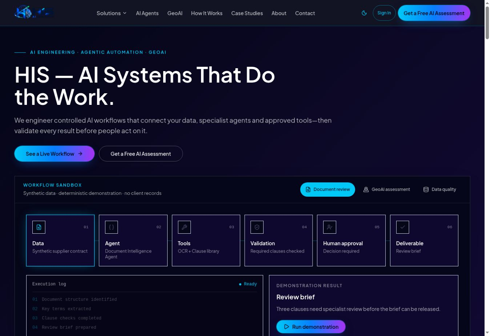
Agentic workflowsHuman reviewGeoAI
LIVE AI & GEOAI APPLICATION↗
GeoSentinel AI
A geospatial decision-support dashboard demonstrating flood intelligence and municipal incident-management workflows, with the Nullah Lai and Margalla catchment as a featured context.
- Basin selection, map-based incident triage, risk summaries and analytical views.
- Evidence fusion, incident intelligence, work-order verification and GeoAI-agent interfaces.
- Connects the observe → assess → act → verify workflow in one interactive application.
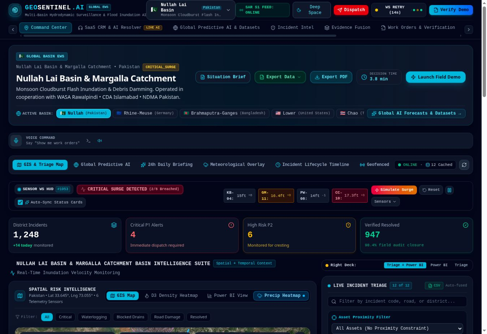
Web GISFlood intelligenceIncident workflows
SELECTED PROJECT / STRUCTURED INTAKEScreenshot
AI HealthAssist
An educational healthcare decision-support prototype combining structured intake, symptom and vital-sign capture, clinical history, laboratory inputs and geographic context.
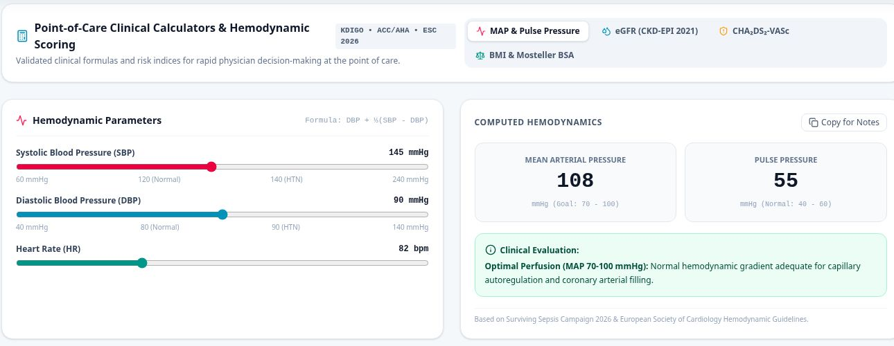
- Five-stage intake and preset clinical test scenarios.
- Interactive MAP/pulse pressure, eGFR, CHA₂DS₂-VASc and BMI/BSA calculator views.
- Clinician-oriented review and public-health surveillance interfaces.
Structured intakeClinical calculatorsHealth GIS
Actual calculator screenshot with patient identifiers excluded. Educational use; does not replace professional diagnosis or treatment.
GEOAI / ISLAMABAD / SATELLITE ANALYSISLive
Islamabad Feature Intelligence
Explore 245,625 combined OSM and Microsoft ML building references with category colors and filters, mapped roads and land use, and dated Sentinel-2 spectral screening. Interactive 3D-style charts show area, percentage and source details.
Includes shapefile ZIPs for ten vector datasets, map/chart PNG and PDF exports, reports and a Power BI-ready kit. Building references are not legal parcels; source coverage and classifications require review.
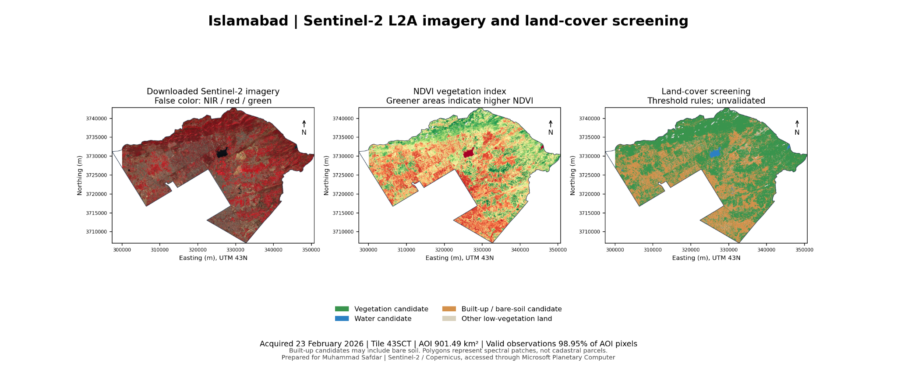
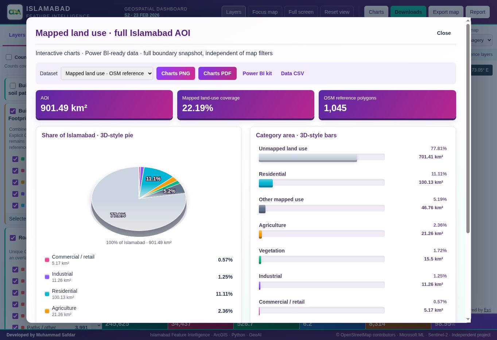
ArcGISPythonGeoAISentinel-2Shapefile
BUSINESS INTELLIGENCE / RETAIL ANALYTICSInteractive
Laptop Sales & Pricing Intelligence
Explore 4,446 laptop listings, reported sales, brands, processor mix, price bands, ratings and stock coverage. The case study flags source inconsistencies and includes a Power BI model guide.
Power BIDAXRetail AnalyticsData QA
BUSINESS INTELLIGENCE / CUSTOMER ANALYTICSInteractive
Customer Purchase Intelligence
Anonymous purchase analysis across 2016–2019, with year, country, product and age-band visuals. The source-date and currency limitations are documented.
Power BIDAXCustomer AnalyticsVisualization
BUSINESS INTELLIGENCE / SALES ANALYTICSInteractive
Superstore Sales Intelligence
Interactive exploration of 5,899 order lines across 2019–2020, with sales, profit, margin, monthly trends and product and regional performance. Includes a Power BI Desktop model guide and a documented returns data-quality finding.
Power BIDAXData AnalyticsDashboard
NEW · GEOAI / AI-ML / GIS
3 APPLICATIONS
GeoAI Site Intelligence Suite
An integrated GeoAI decision-support suite combining Python, AI/ML, GIS, spatial intelligence and MCDA for intelligent site selection and risk-aware planning.
MERIDIAN PRO
AI Geospatial Suitability
Launch →
GEOSENTINEL PRO
Flood Mitigation Siting
Launch →
SOLARIS PRO
Utility-Scale Solar Siting
Launch →
Python
AI/ML
GeoAI
GIS
MCDA
Leaflet
SELECTED PROJECT / LEAFLETScreenshot
GeoSentinel FloodOps
An interactive global flood and water-intelligence demonstration linking geographic context, modeled exposure, incidents, missions and review-oriented recommendations.
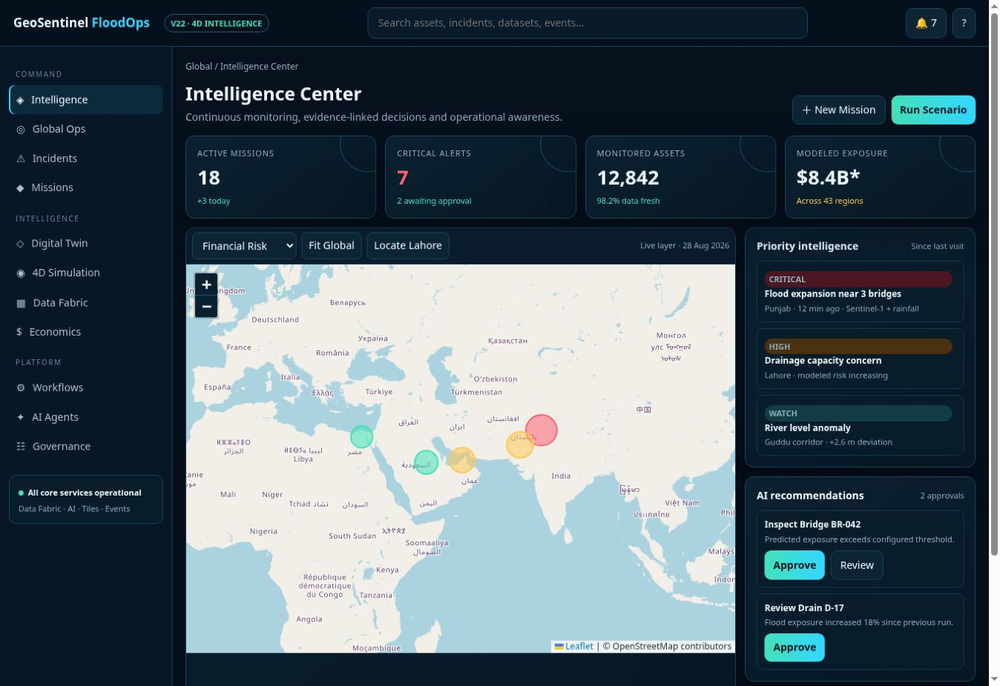
- Leaflet map views for flood exposure, critical assets, events and modeled financial risk.
- Intelligence Center, Digital Twin, 4D Simulation, Data Fabric and governance workspaces.
- Recommendation review and approval interfaces illustrating the observe → assess → decide → act workflow.
LeafletFlood intelligenceHuman review
Actual interface screenshot. Displayed alerts, exposure values and operational metrics are illustrative; they are not verified live events or losses.
SELECTED PROJECT / INFRASTRUCTURE GISScreenshot
Pakistan Infrastructure GIS Command Centre
A Punjab infrastructure GIS prototype bringing utility networks, asset condition, field verification, project progress and data-quality issues into one command dashboard.
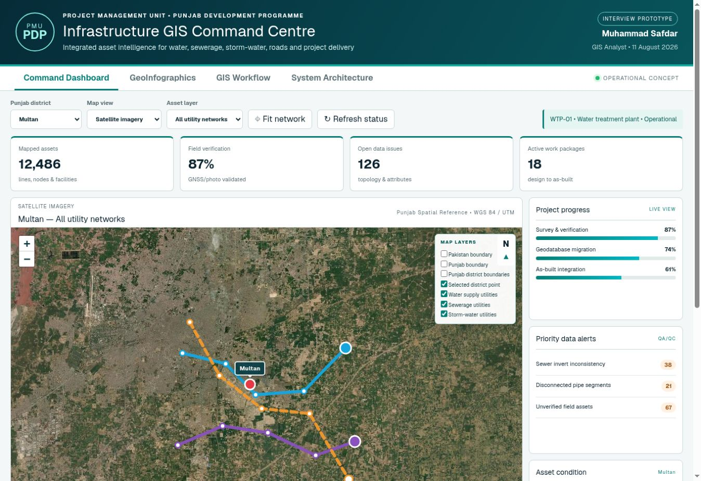
- District, map-theme and water/sewerage/storm-water layer selectors.
- Satellite basemap with schematic utility overlays and progress/QA summaries.
- GIS workflow, geoinfographics and system-architecture views connecting survey, QA/QC, enterprise data and decisions.
Infrastructure GISUtilitiesProject monitoring
Actual dashboard screenshot. Interview prototype with illustrative assets and non-operational metrics.
SELECTED PROJECT / PYTHONScreenshot
GeoAI Resilience Intelligence Suite
A five-program spatial decision-support suite supported by a Python research toolkit for urban growth, flood response, utility risk, drainage capacity and Earth-observation change.
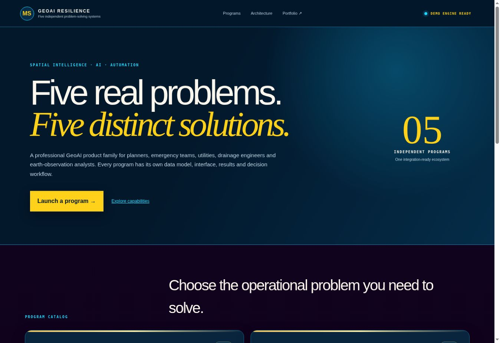
- Independent Urban Intelligence, Flood Intelligence, Utility Guardian, Drainage Lab and Earth Change AI workflows.
- Reference methods covering weighted suitability, hazard/exposure screening, asset consequence, runoff-capacity gaps and spectral change.
- Deterministic web workbench demonstrations with layer controls, analytical records and documented uncertainty.
PythonGeoAIGISHydrology
Actual suite homepage. Research and demonstration software; the browser does not run licensed ArcGIS Pro or local QGIS.
SELECTED PROJECT / CADScreenshot
Planora AI — CAD, BIM & GIS Flow
An AI-assisted built-environment application showcasing a connected project brief, CAD, 3D, BIM, MEP, GIS, costing and digital-twin workflow.
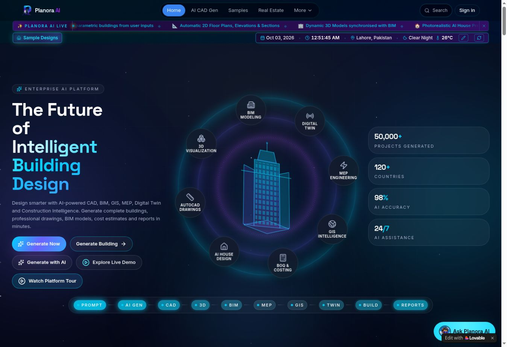
- Project-brief templates and spatial inputs using coordinates, GeoJSON or KML/KMZ.
- Preview interfaces for floor plans, massing, BIM objects, MEP routing and site context.
- Cost/BOQ, construction planning and reporting concepts organized around a shared building model.
CADBIM–GIS3DDigital Twin
Actual homepage screenshot. Source repository is private. Marketing counts and accuracy claims have not been independently validated; engineering outputs require professional review.
SELECTED PROJECT / PYTHONOverview
LangChain RAG Document Assistant
A document-intelligence project demonstrating a traceable retrieval-augmented generation pipeline from document ingestion to source-aware answers.

- PDF, TXT and Markdown ingestion, normalization and overlapping text chunks.
- Embedding-based semantic retrieval and SingleStore vector storage documented in the source.
- Grounded question answering, source citations and retrieval inspection.
PythonLangChainVector searchSingleStore
Project overview graphic, not an app screenshot. Demo currently requires sign-in; capabilities are described from the public repository.
SELECTED PROJECT / PYTHONOverview
MEP Scanner System
A Python engineering-document scanner that associates OCR-detected MEP components with nearby dimensions, airflow values and equipment tags.

- PDF/image rendering and configurable drawing preprocessing with local EasyOCR.
- Editable detections, confidence thresholds, component filters and missing-field QA flags.
- Original-page and OCR review plus formatted multi-sheet Excel reporting.
PythonEasyOCROpenCVStreamlit
Project overview graphic, not an app screenshot. Demo currently requires sign-in. OCR findings must be checked against approved drawings.
SELECTED PROJECT / PANDASScreenshot
Python & AI Analytics Lab
A four-project Python portfolio showing data preparation, exploratory analysis, classification, regression, clustering, ensembles and recurrent forecasting.
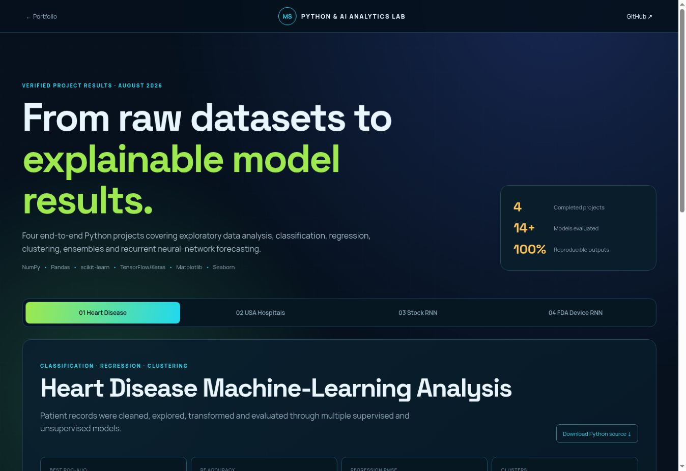
- Heart-disease ML analysis, USA hospital analysis, stock RNN and FDA device RNN project views.
- Model comparisons, evaluation charts, workflow explanations and downloadable Python source.
- A common inspect → clean → explore → model → evaluate → explain pipeline.
Pandasscikit-learnTensorFlow/KerasVisualization
Actual lab screenshot. Educational analyses; displayed model metrics are project-specific, not evidence of clinical or financial reliability.
PROFESSIONAL CASE STUDIES
Six representative deliveries across utilities, disaster management, land, agriculture, infrastructure and environment.
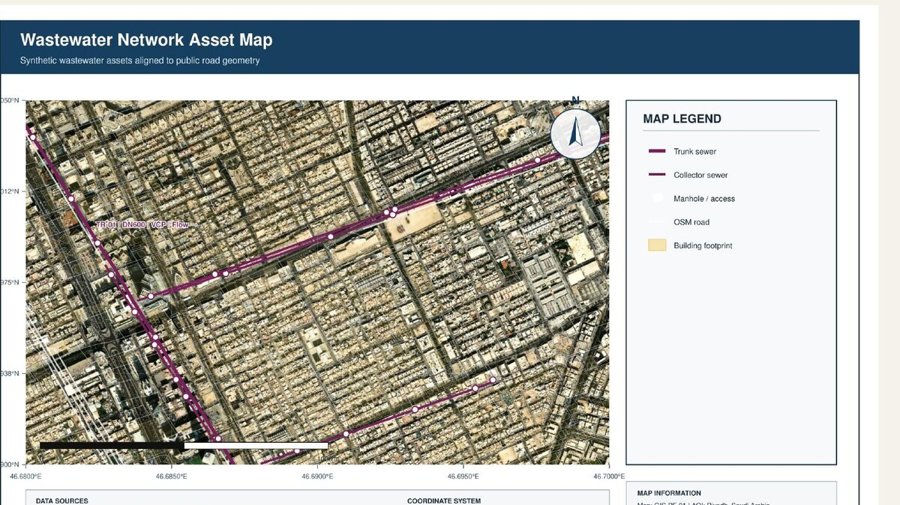
NWC Wastewater Network GIS
Utility-GIS structuring, mapping and quality-controlled network intelligence for operational use.
Enterprise GISUtilitiesData QA
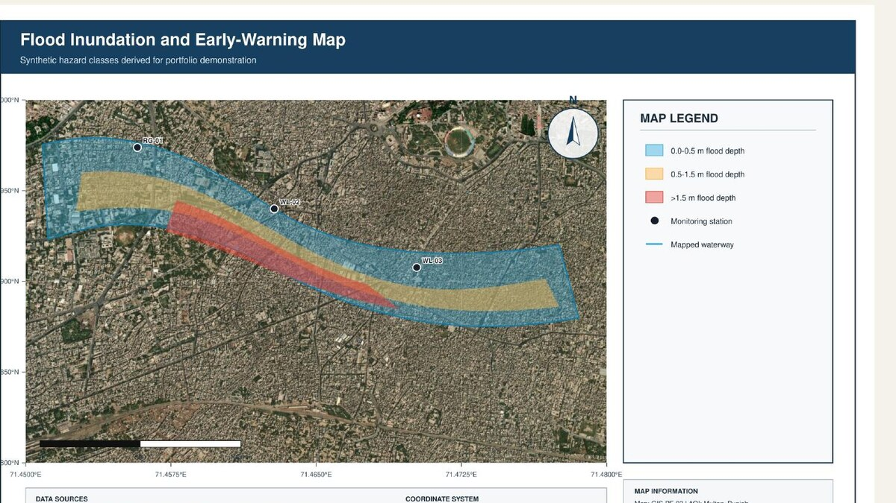
PDMA Punjab Flood Decision Support
Flood exposure, evacuation access and early-warning mapping for Chenab and Sutlej influence areas.
Risk mappingRemote sensingDRR
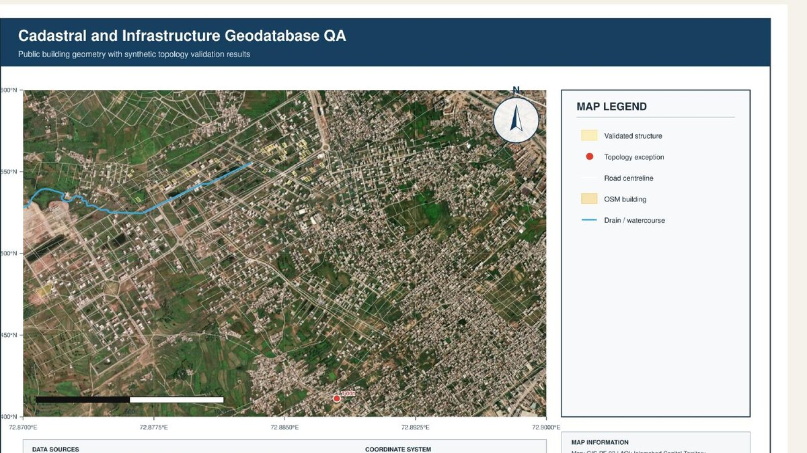
FGEHA Enterprise Geodatabase
CAD-to-GIS conversion, cadastral topology and infrastructure databases for Islamabad sectors.
CadastreTopologyArcGIS
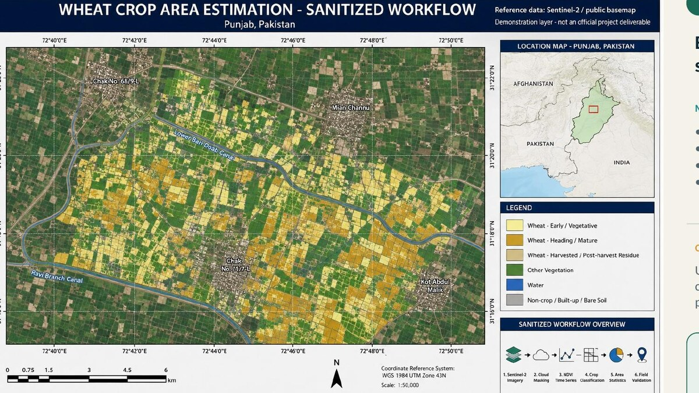
Crop & Wheat Intelligence
Satellite crop monitoring, estimation and predictive spatial analytics for agricultural decisions.
GEESentinelGeoAI
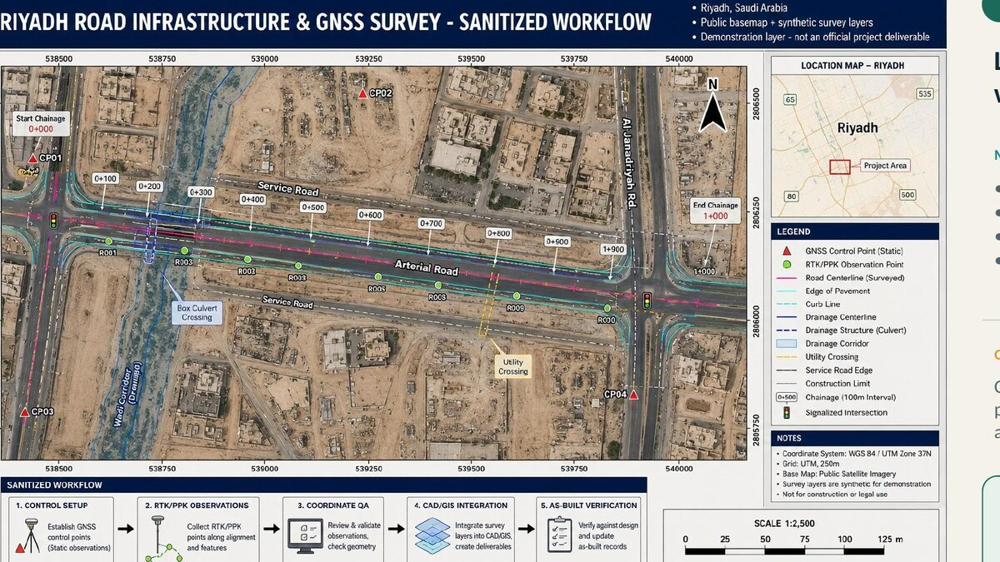
Integrated Spatial Systems
GIS, GNSS, field information and database workflows for infrastructure coordination.
GNSSWeb GISAutomation
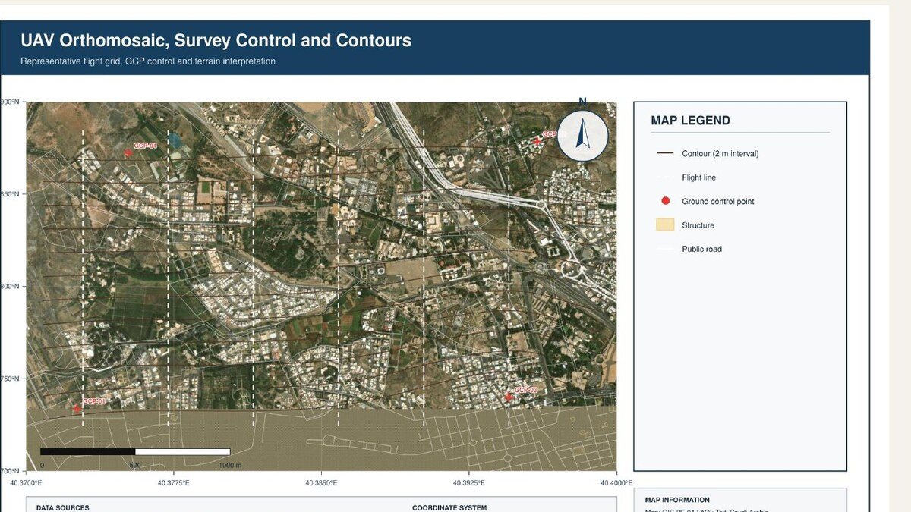
Mining Site Spatial Assessment
Environmental and geospatial screening supporting site understanding and evidence-based assessment.
SuitabilityTerrainRS
EXPERIENCE
From field GIS to operational AI.
A concise career timeline. Client-sensitive work is summarized; public demonstrations are linked above rather than repeated here.
GIS Specialist
Professional Geo Tech Services FZC LLCUtilities, infrastructure, GNSS and environmental spatial delivery across KSA/UAE assignments.
GIS Expert
TerraSense Consulting Pvt. Ltd.GeoAI land-cover analysis, satellite crop intelligence, wheat estimation and predictive workflows.
GIS Specialist
FGEHA, IslamabadCAD-to-GIS transformation, topology, cadastral and infrastructure geodatabases; 20+ staff trained.
GIS Manager
Kernel Seeds CorporationGeodatabase management, georeferencing, crop analysis and precision-agriculture information.
GIS Manager
PDMA Punjab — PIU, MultanFlood intelligence for Chenab and Sutlej influence areas, exposure analysis and emergency mapping.
Junior GIS Professional
The Urban UnitUrban, land, infrastructure and survey-focused GIS delivery for public-sector planning.
GIS Assistant / GIS Associate
The Urban Unit & Loyal ConsultantsFoundation in mapping, digitization, field-survey integration, spatial analysis and cartography.
CREDENTIALS
Continuous learning for a changing profession.
LET’S BUILD SOMETHING USEFUL
Have a spatial challenge?
Open to Data Science, Data Engineering, AI/ML, Python, GIS, GeoAI and technical leadership opportunities in Pakistan, the GCC and globally.